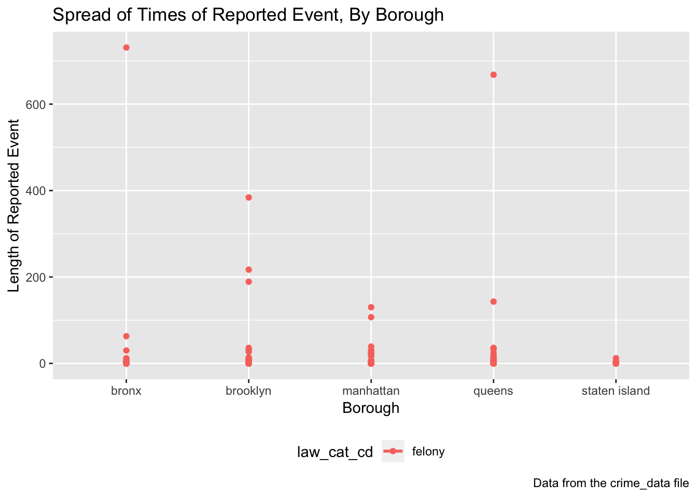

This is one of the exploratory analyses for our P8105 - Data Science group project. In this exploratory analysis, we attempt to look at whether the length of time of the reported event differs by borough.
First, I load the tidyverse and patchwork package.
## Skipping install of 'patchwork' from a github remote, the SHA1 (fd7958ba) has not changed since last install.
## Use `force = TRUE` to force installationNext, I read in the CSV file and tidy it up. I limit the data by randomly sampling 1,000 observations from the data frame.
crime_df = readRDS(file = "datasets/nyc_felony_crimes.rds")
crime_data = crime_df %>%
janitor::clean_names() %>%
sample_n(1000) %>%
mutate(time_diff = (difftime(cmplnt_to_dt, cmplnt_fr_dt))) %>%
mutate(time_diff2 = (as.numeric(cmplnt_to_dt - cmplnt_fr_dt, units = "days", na.rm = TRUE))) %>%
select(cmplnt_fr_dt, cmplnt_to_dt, law_cat_cd, time_diff, time_diff2, boro_nm)
head(crime_data)## cmplnt_fr_dt cmplnt_to_dt law_cat_cd time_diff time_diff2
## 1 2014-02-04 2014-02-04 felony 0 secs 0
## 2 2017-04-27 2017-06-23 felony 4924800 secs 57
## 3 2017-08-08 2017-08-08 felony 0 secs 0
## 4 2015-01-02 2015-01-02 felony 0 secs 0
## 5 2017-01-17 2017-01-17 felony 0 secs 0
## 6 2014-05-03 2014-05-03 felony 0 secs 0
## boro_nm
## 1 brooklyn
## 2 brooklyn
## 3 staten island
## 4 manhattan
## 5 brooklyn
## 6 manhattanI can look at the data in a table to examine general trends and get a feel of my data.
crime_table =
crime_data %>%
knitr::kable(digits = 2)
head(crime_table, 12)## [1] "cmplnt_fr_dt cmplnt_to_dt law_cat_cd time_diff time_diff2 boro_nm "
## [2] "------------- ------------- ----------- -------------- ----------- --------------"
## [3] "2014-02-04 2014-02-04 felony 0 secs 0.00 brooklyn "
## [4] "2017-04-27 2017-06-23 felony 4924800 secs 57.00 brooklyn "
## [5] "2017-08-08 2017-08-08 felony 0 secs 0.00 staten island "
## [6] "2015-01-02 2015-01-02 felony 0 secs 0.00 manhattan "
## [7] "2017-01-17 2017-01-17 felony 0 secs 0.00 brooklyn "
## [8] "2014-05-03 2014-05-03 felony 0 secs 0.00 manhattan "
## [9] "2015-08-20 NA felony NA NA bronx "
## [10] "2017-11-03 NA felony NA NA brooklyn "
## [11] "2015-06-25 NA felony NA NA bronx "
## [12] "2015-10-17 2015-10-17 felony 0 secs 0.00 brooklyn "I can also look at whether the length of time for the reported event/crime differs by borough visually.
crime_data2 <- crime_data[complete.cases(crime_data),]
crime_graph2 =
crime_data2 %>%
group_by(boro_nm, law_cat_cd) %>%
ggplot(aes(x = boro_nm, y = time_diff2, color = law_cat_cd)) +
geom_point() +
labs(
title = "Spread of Times of Reported Event, By Borough",
x = "Borough",
y = "Length of Reported Event",
caption = "Data from the crime_data file"
) +
geom_smooth(se = FALSE) +
theme(legend.position = "bottom")
crime_graph2## `geom_smooth()` using method = 'loess' and formula 'y ~ x' From the graph above, we can see a couple of things. First, there are, numerically speaking, fewer reported events in Staten Island. Secondly, the spread of the reported events seems to be slightly larger in the Bronx than in other boroughs. Lastly, although the spread among Brooklyn, Manhattan, and Queens is approximately the same, Queens has more outliers.